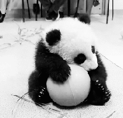

a)Uwagi na temat JS: 1.Kiedy powstała? -W 1995 roku, na mocy porozumienia z firmą Sun Microsystems 2.Dlaczego jest to język skryptowy? -JavaScript jest przede wszystkim językiem skryptowym – to znaczy interpretowanym. Nie musi zostać skompilowany do kodu maszynowego, aby można było zobaczyć efekty jego działania. 3.Gdzie jest wykonywany JS (kliet lub serwer)? -Wystarczy nam do tego przeglądarka internetowa, która ten język obsługuje – czyli w zasadzie każda z liczących się na rynku aplikacji. 4.Dlaczego jest to bezpieczne narzędzie? -Ze względów bezpieczeństwa JavaScript ma znacznie ograniczone uprawnienia dostępu do zasobów komputera, przy użyciu którego przeglądana jest dana strona, a wszelkie odwołania do funkcji i obiektów wykonywane są w trakcie wykonywania programu. 5.Czy jest to język obiektowy , jeśli tak to dlaczego? -Tak, ponieważ wszelkie odwołania do funkcji i obiektów wykonywane są w trakcie wykonywania programu. b)Przepisz linie kody pod nimi wytłumaczenie: <input type="button" name="przycisk" value="Nowa Strona" onclick="WinOpen(' ')"> --> ta linijka robi przycisk o nazwie przycisk z wartością Nowa Strona - przy kliknięciu odpala nowe okno. window.open("obraz.html","okienko","toolbar=no","directories=no","menubar=no","height=280","width=160","top=200","left=200"); toolbar=no --> ukrywa standardowy pasek narzędzi. directories=no, -->ukrywa przyciski katalogów. menubar=no, -->ukrywa menu przeglądarki. height=280, -->ustawia wysokość okna. width=160, -->ustawia szerokość okna. top=200, -->ustawia położenie okna względem góry ekranu. left=200 -->ustawia położenie okna względem lewej strony ekranu. window.close() --> zamyka okno.